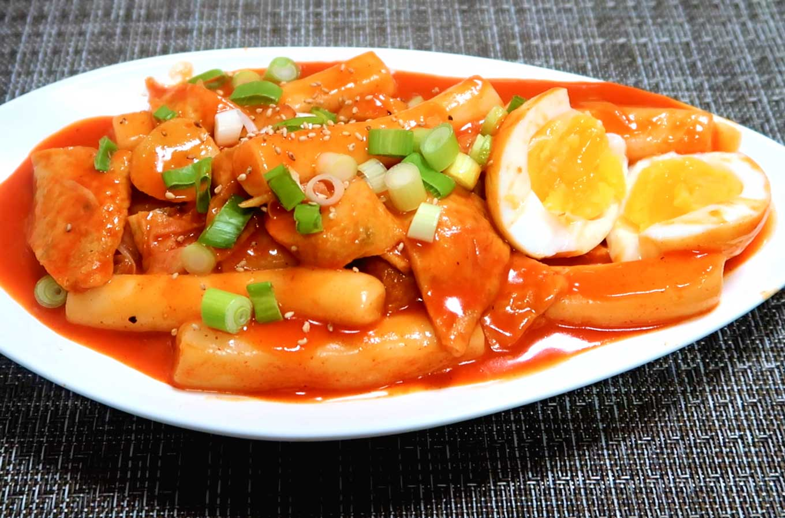

My Favorite Food!
Tteokbokki (Spicy Korean Rice Cake)
This is the best recipe you will ever make!

Ingredients
- Rice cake
- Water
- Hot pepper paste
- Hot pepper flakes
- Sugar
- Green onions
- Hard boiled eggs
- fish cakes
- cheese
Directions
- Boil Water
- Add rice Cake
- Combine hot pepper paste, hot pepper flakes, and sugar in a small bowl.
- Add the mixture in the bowl, the green onion, the fish cakes and hard boiled eggs.
- Stir gently for 10-15 minutes.
- Remove from the heat, put cheese on top and serve.
For more information check out this site